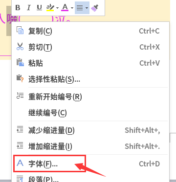
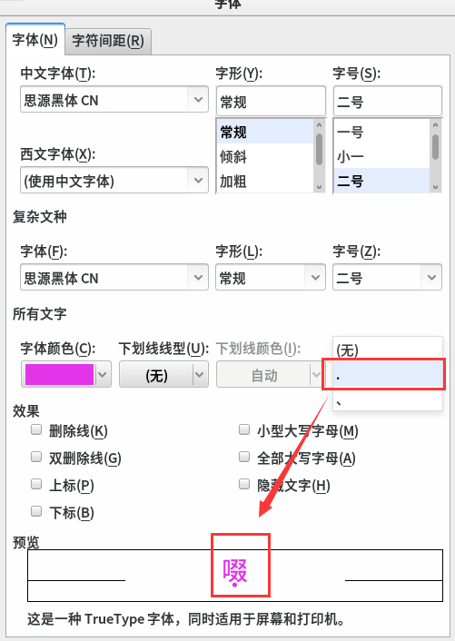

第4课 学会字符样式
1、打开WPS文字，关闭不用的标签，点加号“+”新建；
2、纸张设成横向，大小16开。在“页面布局 - 纸张大小 - 横向”里设置；
3、给页面加上颜色，在“页面边框 - 底纹 - 填充颜色”里面；
4、设置字体、字号、颜色；
5、出上两道练习题，一道加点的词，一道填空题；
6、选中要加点的词，瞄准点右键，选“字体”菜单；

7、在出来的面板里，找到“重音”，选择点，“确定”；

8、第二题，选中标题栏上的下划线U，按空格就可以了；
9、写上答案，选中，点格式栏里的I “倾斜”，换个颜色；
10、保存文件，文件名前面加上04，保存到自己的文件夹；
本节学习了的基础知识，如果你成功地完成了练习，请继续学习下一课内容；
返回目录 下一课
本教程由TeliuTe制作|著作权所有
基础教程网：http://teliute.org/
美丽的校园……
转载和引用本站内容，请保留作者和本站链接。